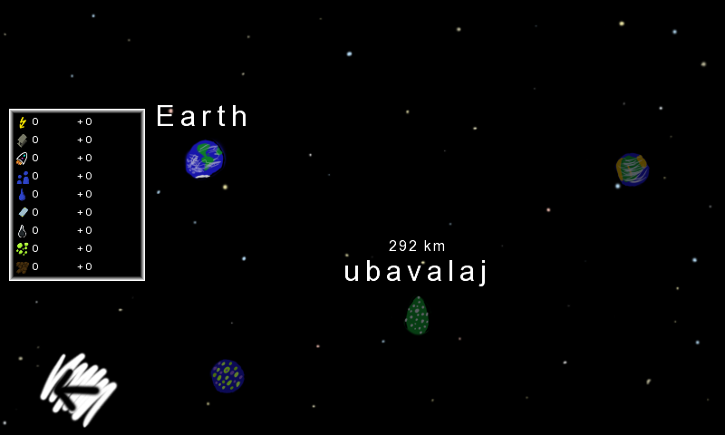

Hi there, adventurer!
After years of exploitation of the earth there is almost nothing left. The earth is low on oil and coal and due to pollution solar panels don't work anymore. We are running out of power!
Humanity's last hope is to move to another planet and start over. Our astronomer found a suitable planet with the beautiful name of Unadexus. You are in charge of guiding this mission and bringing all remaining humans to Unadexus. Good luck!
This tutorial will help you get started in Unadexus. Ok, let's start the game.
After we read the short introduction we are greeted by the main build screen. We are currently looking at earth.
On this screen you will manage a planet and build stuff. Here you will spend most of your time. Let's see what we got:
The thing that will catch your eye is probably the big map in the center. Here you can see a map of the current planet with all the buildings and resources. To see what the different resources are take a look at the end of the tutorial.
You will use this view to build and destroy stuff as well as (de)activate buildings. To (de)activate something just double click on it. While a building is deactivated it does not use any resources but it also does not produce anything. Sometimes buildings will be deactivated automatically if they don't get enough resources. You than have to reactivate them once there are again enough resources. You can drag to move the map around.
Here you can see all the resources that we have on this planet. The top row is the current storage and the bottom row shows the current production (positive) or consumption (negative) per second. To see what each resource means take a look at the end of the tutorial. As you can see, we currently lose 13 electricity per second. If we run out of it, all humans (from now on called dudes, as in the game) on this planet will die.
Here you find all the planets you visited so far. The text field at the top is the name of the current planet. You can change it if you want to. For each planet (in this picture only earth) you see how many dudes are living there and for how many we would have available space in the cities. If you click on a planet you can directly change to it.
This list allows you to select a building to build. To cancel building something you can press on "cancel" (in this list), Esc on the keyboard or the right mouse button. Once you selected something you can build it in the center view. If you later want to destroy a building you can select "remove" from the list and then click on a building.
Once you selected something you get detail information about the building (on the right side of the screen, see below) and how much it will cost. If you can't build something there will be an error message in the bottom right corner. Note that some buildings have to be built on some special type of ground (e.g. oil rig on an oil part).
In this part we can buy ships. We would also see ships that are currently on this planet. With a click on a ship we get to its detail page where we can send it to another planet. To buy a ship first select the size from the dropdown and then click "buy ship".
This little window gives us some information about the ship we are about to purchase (left image) or about the building we currently selected (right image, example of the solar factory) in the building list. The values in the "production" section are units per second. If the value is negative, the resource will be used, if it is positive it will be produced.
In this example the solar factory will produce 1 solar panel per second and use 10 electricity and 2 metal. The dudes are a bit special: the number specifies how many dudes are necessary to operate the building. Once it is deactivated they will be available again. The values in the other two sections are one time costs (destroying often costs some electricity and give back some metal).
Note that those values are the same for all planets except the solar plants. Each planet has a hidden value that determines how much energy is produced by solar plants. On the earth solar plants don't produce any electricity so there is no point in building them. On Unadexus on the other hand you won't know what to do with so much energy once you have built a solar plant.
With this button we will get to an overview of the universe. Let's do that now!
This map shows you all planets in the universe. You can drag to move the view. The grayed out planets are the ones we did not yet visit.
If we hover over a planet we get the resources that we have on this planet and the current production / usage.

For other planets it also shows the distance from the current planet. As we did not yet visit ubavalaj all resources are zero. We won't know how much resources there are to extract until we went there and checked.
The goal of this mission is the planet Unadexus. It is located in the lower right corner while the earth is in the top left. You will need a space ship that can transport enough dudes and resources 1746 km. Or you could just make some stops in between and refill your space ships.
Let's go back (with the button on the bottom left corner) and buy a small space ship. Note that it probably is not a good idea to buy a ship so early in the game.
As you can see there is now a space ship in the previously empty list. You can see the name of the ship and its current location (either a planet or space). If you click on a space ship you get to the detail page for it.
This screen gives you all necessary information about your space ship. Let's take a look.
Here you can see and change the name of the ship. Also you could destroy it. This might make sense to make room for a bigger ship as you can only have two ships per space port (but you could build many space ports).
This is where you can move resources from the planet onto the ship and vice versa. Just enter the amount of resources you want to be on the ship. To move to the ship, you increase the amount. To move to the planet, you decrease the amount. There is a limited capacity on the ship so you can't enter any values. Let's add some resources.
Notice how the resources of the planet (visible at the top of the screen) and the details window on the right adjusted accordingly. Let's look at this details window.
Here you can find all kinds of information about the ship. Most important are the capacity and propellant. The first specifies how much we can load onto the ship (not every resource has the same weight, you have to test a bit). Propellant tells us how much propellant we need per km we want to travel. This value is dependent on the weight of the ship. You have to load enough propellant to reach the destination before you can launch. Note that the additional propellant increases the weight of the ship a bit and thus how much propellant is used per km travelled. You can see the range for the current loaded amount of propellant also in this view.
To fly a space ship to another planet you first have to load enough propellant (and the desired freight). Then you can click on the launch button and choose the destination planet. Should you not be able to fly to the chosen planet there will be an error message in the bottom right corner.
Phew, that's it for the different screens. Now let's look at the different buildings and resources.
Electricity is the main resource and is used to power everything. Most other resources can be transformed to electricity using the corresponding building.
Metal is used to buy new buildings and produce solar panels. It can be mined in a metal mine.
Propellant is used to power space ships. It is created in space factories.
Dudes are needed to run the different buildings. Different buildings need a different number of dudes. This resource is a bit special as it can't be created nor used. The value displayed is just the number of people that live on the planet and don't work in a building. If there is free capacity on a planet the number of dudes will slowly increase.
Water is used to produce propellant. It can be retrieved in water plants.
Solar panels are used to buy solar plants. They are produced in solar factories.
Coal can be mined in coal mines and then transformed into electricity in a coal plant. It is the least efficient energy source of coal, oil and gas.
Oil can be obtained at an oil rig and transformed into electricity in a oil plant. It is the second most efficient energy source of coal, oil and gas.
Gas can be obtained at a gas rig and transformed into electricity in a gas plant. It is the most efficient energy source of coal, oil and gas.
All buildings use and/or produce a certain amount of resources per second. Should a building not get enough resources it will be deactivated and you have to manually reactivate it. This is especially important for the power plants.
Increases the capacity of dudes for this planet by 100. As long as a planet has remaining capacity the number of people will slowly increase. Should you need more dudes to power the buildings you can build a new city. You can deactivate a city only if there is still enough capacity to house all dudes without that city.
Increases the number of ships a planet can have by two. A planet without a space port already has one available slot. You can deactivate a space port only if there is still enough capacity to store all space ships without that space port.
Is used to produce propellant from water.
Draws water from a water source. A water source can give an infinite amount of water.
Mines metal from a metal region.
Produces solar panels. Those are then used to produce solar plants.
Produces electricity using the sun. The available sun light is not the same on every planet so the amount of energy that is produced varies. On earth they can't produce any electricity, but on Unadexus they produce very much energy.
Mines coal from a coal region.
Transforms coal into electricity. Three coal mines are needed to fully supply a coal plant.
Extracts oil from an oil region.
Transforms oil into electricity. Three oil rigs are needed to fully supply an oil plant.
Extracts gas from a gas region.
Transforms gas into electricity. Three gas rigs are needed to fully supply a gas plant.
Does nothing but uses a little bit of electricity. Why would you build this?
I hope this tutorial will give you enough information to play the game. If something is still unclear feel free to ask me.